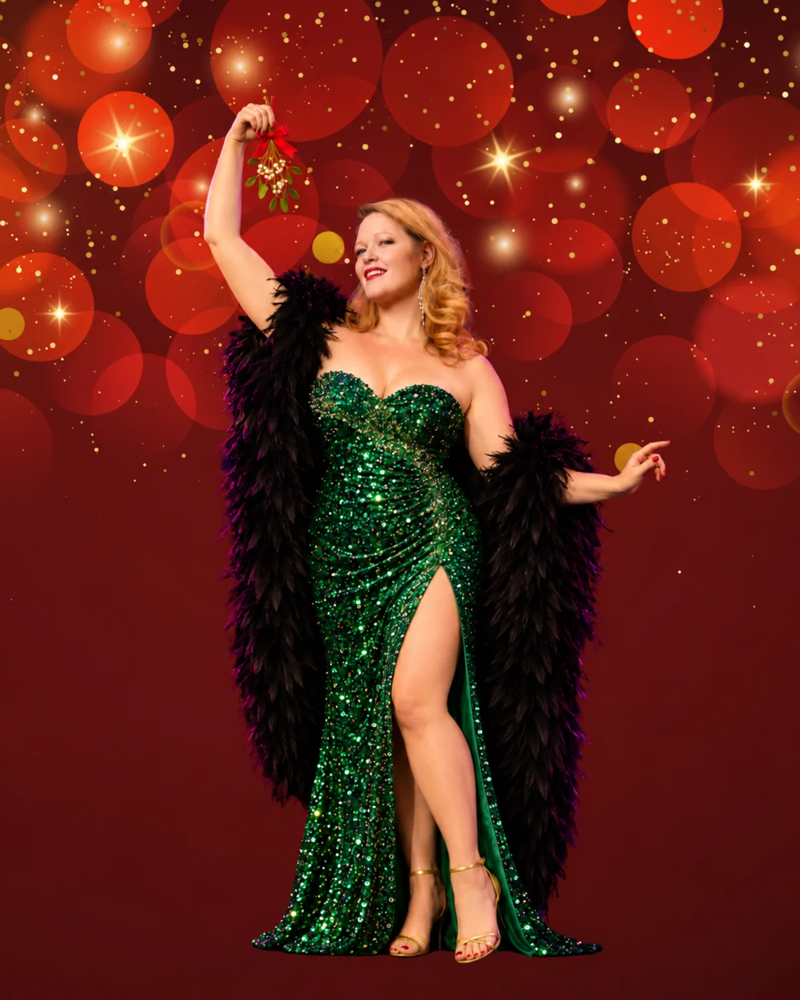
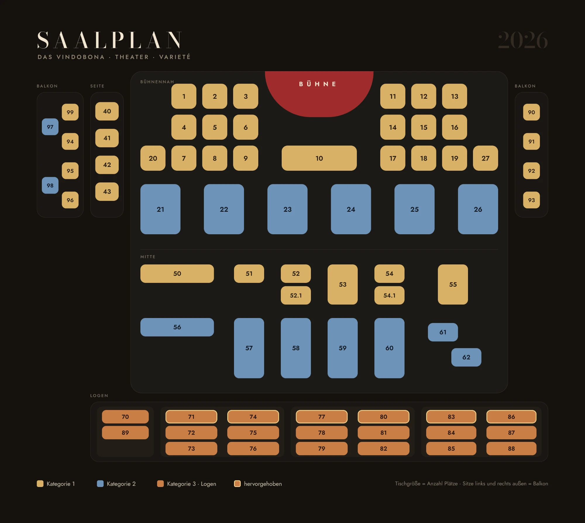
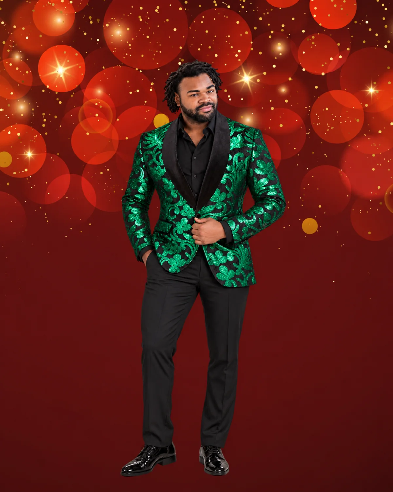
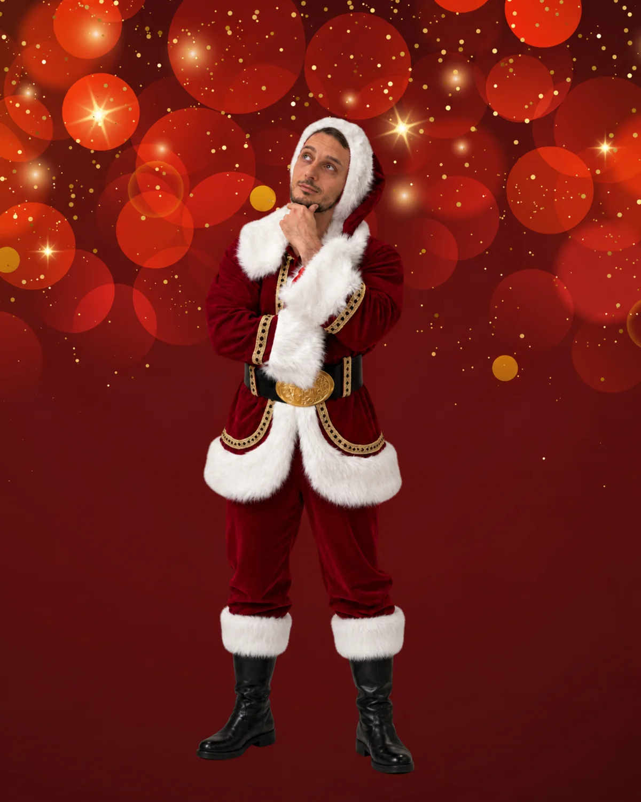
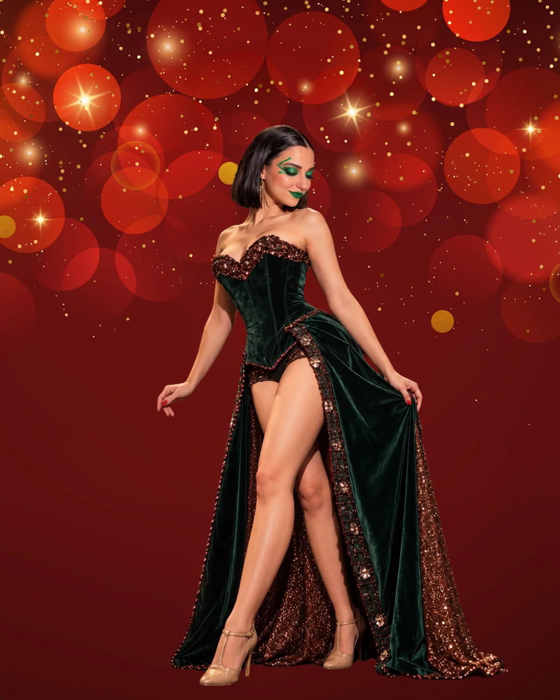
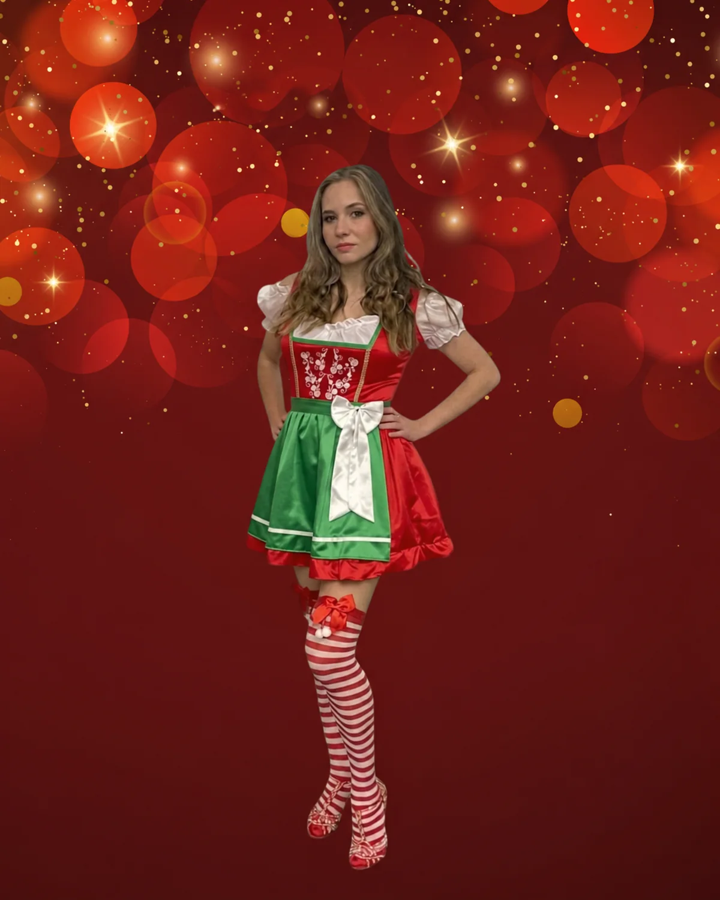
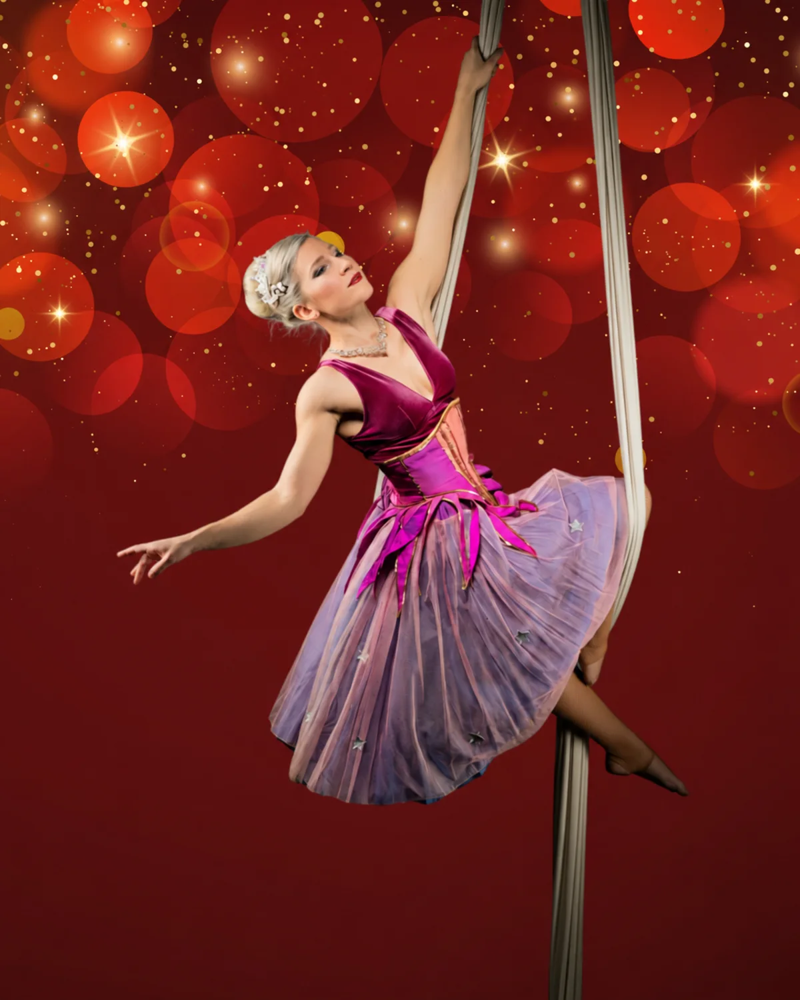
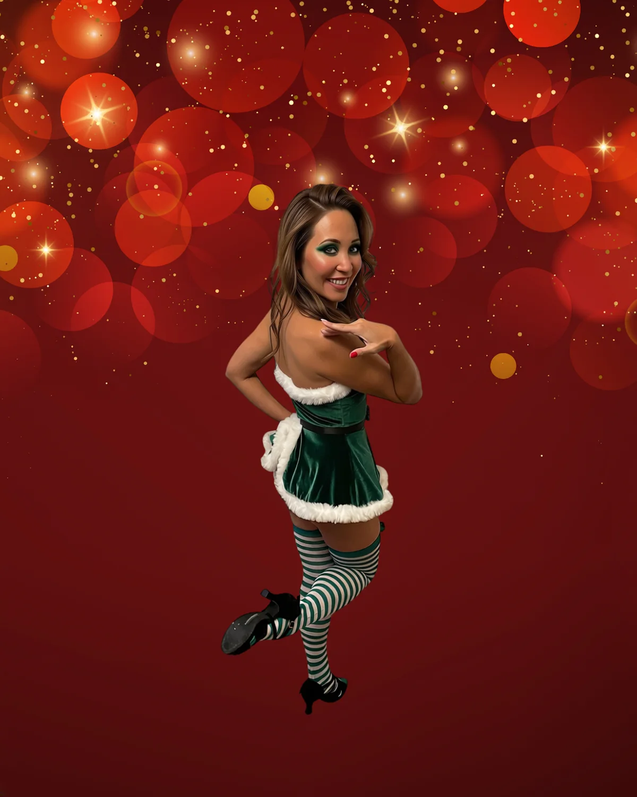

Anne Wieben
Holly
Eine Weihnachtselfe mit Herz, Stimme und einem heimlichen Plan.
Die Weihnachts-Dinnershow
Die Suche nach Mrs. Claus.
Die Geschichte
Santa ist Single. Seine Elfen finden: Das muss sich ändern.
Holly und Jolly starten heimlich ein Casting für die zukünftige Mrs. Claus. Kandidatinnen treffen ein, Erwartungen geraten durcheinander und Ivy Grimm setzt alles daran, das romantische Weihnachtsprojekt zu verhindern.
Santa Baby verbindet Dinnershow, Live-Musik, Tanz und pointierte Comedy zu einer festlichen Geschichte für Erwachsene. Opulent, verspielt und garantiert weniger still als die Heilige Nacht.
Termine 2026 / 27
Dinner & Show
Alles für deinen Abend im Vindobona. Wähle eine Kachel und entdecke die Details.
Ablauf des Abends
18:30 – 21:30 Uhr
Kategorien 1–4 & Sitzplan

Saalplan vergrößernAuf der Bühne
Neun Figuren, neun festliche Temperamente – und ein Weihnachts-Casting, das garantiert nicht nach Plan verläuft.

Eine Weihnachtselfe mit Herz, Stimme und einem heimlichen Plan.

Optimist, Mitverschwörer und Spezialist für festliches Chaos.

Der begehrteste Junggeselle des Nordpols.

Nicht jede Elfe glaubt an Happy Ends – schon gar nicht für Santa.
Eine Kandidatin mit Charme, Temperament und überraschenden Talenten.

Glitzernd, glamourös und fest entschlossen.

Kühl wie Schnee – zumindest auf den ersten Blick.
Verführerisch, selbstbewusst und immer bereit, die Temperatur am Nordpol zu erhöhen.

Sorgt dafür, dass die Kostüme schnell und stilvoll von der Bühne verschwinden.
Santa Baby · FAQ
Santa sucht eine Frau. Die Elfen Holly und Jolly veranstalten deshalb heimlich ein Casting für die künftige Mrs. Claus. Ivy Grimm will genau das verhindern. Daraus wird ein Abend mit Live-Gesang, Tanz und Comedy, dazu ein festliches 3-Gang-Menü.
Die Show läuft im Vindobona in Wien (Wallensteinplatz 6, 1200 Wien) an diesen Terminen:
Der Abend dauert von 18:30 bis etwa 21:30 Uhr:
Die Gänge werden zwischen den Showteilen serviert, Sie verpassen also nichts.
Kommen Sie am besten um 18:30 Uhr zum Einlass. Dann bleibt genug Zeit für Garderobe und Platzsuche, bevor um 19:00 Uhr die Vorspeise serviert wird.
Auf Deutsch und Englisch. Damit eignet sich die Show auch für internationale Teams und Gäste.
Ja, die Show ist ab 18 Jahren. Santa Baby ist eine festliche Geschichte für Erwachsene.
Tickets gibt es online über das Vindobona (vindobona.wien). Den Link zum jeweiligen Termin finden Sie oben auf dieser Seite.
Die Show, ein Amuse-Bouche und das 3-Gang-Menü. Getränke sind nicht enthalten.
Wo die Tische genau stehen, zeigt der Saalplan auf dieser Seite.
Ja, sehr gut sogar. Die Tickets sind übertragbar, und Sie können sie direkt auf den Namen der beschenkten Person kaufen.
Nein, eine Stornierung ist nicht möglich. Wenn Sie an Ihrem Termin verhindert sind, können Sie Ihr Ticket aber an eine andere Person weitergeben, denn die Tickets sind übertragbar.
Als vegetarische Hauptspeise gibt es Steinpilz-Risotto mit Parmesan und Kräuterseitlingen. Ein veganes Menü gibt es auf Anfrage. Ihren Wunsch nach einem veganen Menü sowie Allergien und Unverträglichkeiten geben Sie bitte spätestens 5 Tage vor der Veranstaltung bekannt, an office@viennoir.com.
Sie bestellen Ihre Getränke direkt am Tisch und bezahlen sie am Ende des Abends.
Ja, gerne. Dinner, Unterhaltung und festlicher Rahmen sind an einem Abend organisiert, Ihr Team muss nichts selbst planen. Für Firmenbuchungen schreiben Sie an events@viennoir.com.
Ja. Die Premium-Tische der KAT 1 sind auch für geschlossene Gruppen gedacht. Für größere Teams stellen wir nach Absprache mehrere Tische zusammen. Bitte buchen Sie früh, denn die Plätze im Dezember sind begrenzt.
Ja. Eine Rechnung auf Ihr Unternehmen ist möglich. Geben Sie dazu bei der Buchung einfach Ihre Firmendaten an.
Spätestens 10 Tage vor der Veranstaltung.
Für private Vorstellungen, eigene Termine oder individuelle Pakete wenden Sie sich bitte an unser Event-Team unter events@viennoir.com.
Ja, das Vindobona ist barrierefrei. Wenn Sie einen bestimmten Platz brauchen, etwa für einen Rollstuhl, sagen Sie uns das bitte bei der Buchung.
Einen festen Dresscode gibt es nicht. Festliche Kleidung passt aber gut zum Abend, und ein Hauch Glitzer ist ausdrücklich willkommen.
Vien.noir presents